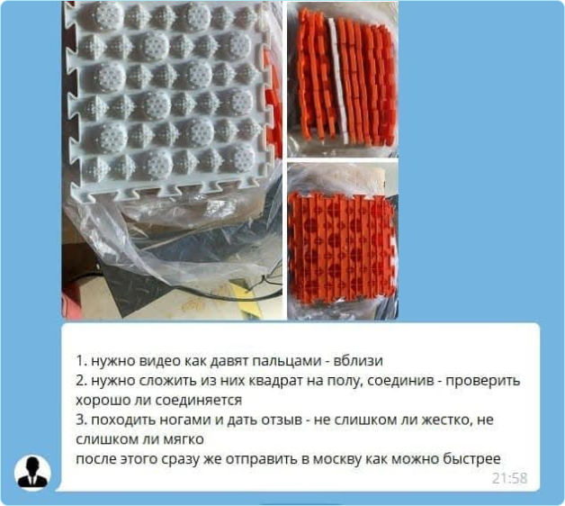

Если из Китая в РФ придет не то, брак или пересорт, вернуть деньги — практически невозможно. Большинство продавцов просто скажут, что груз повредился в пути.
Поэтому проверяйте партию в Китае, до отправки в Россию. Но не нужно бежать за билетами в Иу или Гуанчжоу, чтобы полететь в Поднебесную и потрогать все своими руками. Сделать это можно удаленно, доверив такую задачу специалистам ChinaToday. Мы сами выкупим нужный товар, протестируем его на собственном складе в Иу и доставим в ваш город.
Как это работает
Схема работы выглядит так:
- Подбираете товар или доверяете этот вопрос нам.
- Выкупаем товар и доставляем его на свой склад в Китае.
- Предоставляете ТЗ на проверку товара.
- Присылаем фото и видеоотчет по результатам проверки.
- Если все хорошо, упаковываем партию, загружаем в контейнер и отправляем в Россию.
Мы протестируем позиции строго по техническому заданию, которое может включать любые манипуляции — от замера размеров и соответствия цвета, до проверки всех функций и возможностей.

Пример ТЗ на проверку товара от клиента